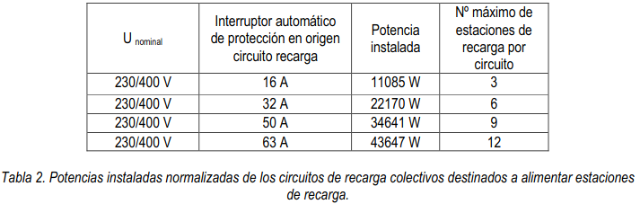

5.REQUISITOS GENERALES DE LA INSTALACIÓN¶
En los locales cerrados de edificios destinados a aparcamientos o estacionamientos colectivos de uso público o privado, se podrá realizar la operación de recarga de baterías siempre que dicha operación se realice sin desprendimiento de gases durante la recarga y que dichos locales no estén clasificados como locales con riesgo de incendio o explosión según la (ITC) BT 29. En el local donde se realice la recarga del vehículo eléctrico se colocará un cartel reflectante en el punto de recarga que identifique que no está permitida la recarga de baterías con desprendimiento de gases.
Warning
Cuando se pretenda realizar una instalación para la recarga del VE en un garaje existente con ventilación forzada o con ventilación natural ymás de 5 plazasde aparcamiento, el proyectista encargado de elaborar el proyecto o el instalador encargado de elaborar la memoria técnica de diseño, revisarán el proyecto original de la instalación eléctrica del garaje para comprobar si el garaje está desclasificado y si se siguen cumpliendo las condiciones de ventilación que permitieron esta desclasificación. En caso de que no se pueda comprobar que el garaje está desclasificado se realizará un proyecto de desclasificación según la ITC-BT 29.
Los circuitos de recarga colectivos discurrirán preferentemente por zonas comunes.
Para los esquemas 1a, 1b, 1c, 2, 3a y 3b, los contadores principales se ubicarán en el propio local o armario destinado a albergar la concentración de contadores o, en caso que no se disponga de espacio suficiente, se habilitará un nuevo local o armario al efecto de acuerdo con los requisitos de la (ITC) BT-16. Cuando se instalen contadores secundarios, éstos se ubicarán en un armario, en una envolvente o dentro de un SAVE.
Warning
En el esquema 4b, el contador principal, que será el correspondiente a los servicios generales de la finca, debe ubicarse en la centralización de contadores.
Se admitirá que la línea general de alimentación tenga derivaciones de menor sección si se garantiza la protección de dichas derivaciones contra sobreintensidades. Para tal fin, en los esquemas 1b, 1c y 3b, se podrán incluir en la caja de derivación las protecciones necesarias con fusibles o interruptor automático.
Warning
La caja en la que se realice la derivación de la LGA debe estar ubicada en un cuarto o armario de contadores o bien en una zona común. La caja estará cerrada y dispondrá de un sistema de cierre similar al utilizado en los armarios de contadores.
Cuando se instale un circuito de recarga colectivo que alimente a varias estaciones de recarga (según el esquema 1a, ó 1b), cada circuito partirá de un interruptor automático para su protección contra sobrecargas y cortocircuitos. Aguas arriba de cada interruptor automático y en el mismo cuadro se instalará un IGA (interruptor general automático) para la protección general de todos los circuitos de recarga
En aparcamientos y estacionamientos, el cuadro de mando y protección asociado a las estaciones de recarga estará identificado en relación a la plaza o plazas de aparcamiento asignadas. Los elementos a instalar en dicho cuadro se definen en el apartado 6.
Los cuadros de mando y protección, o en su caso los SAVE con protecciones integradas, deberán disponer de sistemas de cierre a fin de evitar manipulaciones indebidas de los dispositivos de mando y protección. La potencia instalada en los circuitos de recarga colectivos trifásicos según el esquema 1a, 1b ó 4b se ajustará generalmente a uno de los escalones de la tabla siguiente, aunque el proyectista podrá justificar una potencia distinta, en cuyo caso el circuito y sus protecciones se dimensionarán acorde con la potencia prevista.

Las estaciones de recarga monofásicas se repartirán de forma equilibrada entre las tres fases del circuito de recarga colectivo. El número máximo de estaciones de recarga por cada circuito de recarga colectivo indicado en la tabla 2, se ha calculado suponiendo que las estaciones son monofásicas y de una potencia unitaria de 3680 W. El proyectista podrá ampliar o reducir el número de estaciones de recarga si justifica una potencia instalada por estación inferior o superior respectivamente.
La previsión de potencia y las características del circuito de recarga colectivo o individual previsto para el modo de carga 4 se determinarán para cada proyecto en particular.
El sistema de iluminación en la zona donde esté prevista la realización de la recarga garantizará que durante las operaciones y maniobras necesarias para el inicio y terminación de la recarga exista un nivel de iluminancia horizontal mínima a nivel de suelo de 20 lux para estaciones de recarga de exterior y de 50 lux para estaciones de recarga de interior.
La caída de tensión máxima admisible en cualquier circuito desde su origen hasta el punto de recarga no será superior al 5%. Los conductores utilizados serán generalmente de cobre y su sección no será inferior a 2,5mm2, aunque podrán ser de aluminio en instalaciones distintas de las viviendas o aparcamientos colectivos en edificios de viviendas, en cuyo caso la sección mínima será de 4mm2. Siempre que se utilicen conductores de aluminio, sus conexiones deberán realizarse utilizando las técnicasapropiadas que eviten el deterioro del conductor debido a la aparición de potenciales peligrosos, originados por pares galvánicos entre metales distintos.
En instalaciones para la recarga de VEHÍCULO ELÉCTRICO, que reúnan más de 5 estaciones de recarga, por ejemplo en estaciones dedicadas específicamente a la recarga del VEHÍCULO ELÉCTRICO, el proyectista estudiará la necesidad de instalar filtros de corrección de armónicos, con el objeto de garantizar que se mantiene la distorsión armónica de la tensión según los límites característicos de la tensión suministrada por las redes generales de distribución, para que otros usuarios que estén conectados en el mismo punto de la red no se vean perjudicados.
Warning
En caso necesario, independientemente del número de estaciones de recarga, el proyectista o instalador preverálos elementos de corrección necesarios para evitar perturbaciones o distorsiones que afecten a la red yen particulara las comunicaciones del sistema de telegestión de los contadores, por ejemplo,mediante la instalación de filtros.Con tal fin, junto con el contador principal, tanto en cajas de protección y medida, CPM, como en centralizaciones de contadores, se recomienda reservar un espacio adecuado para que la empresa distribuidora pueda instalar un filtro PLC que elimine el ruido en el rango de frecuencia PLC que pueden introducir las estaciones de recarga o los propios vehículos y que impiden la telegestión del resto de suministros conectados a la misma red de baja tensión. En instalaciones existentes en las que no haya posibilidad de adecuar la centralización, se podrá utilizar cualquier otra ubicación aguas arriba de la estación de recarga.
El circuito que alimenta el punto de recarga debe ser un circuito dedicado y no debe usarse para alimentar ningún otro equipo eléctrico salvo los consumos auxiliares relacionados con el propio sistema de recarga, entre los que se puede incluir la iluminación de la estación de recarga.
La instalación fija para la recarga del VEHÍCULO ELÉCTRICO deberá contar con las bases de toma de corriente que corresponda según el modo de carga y ubicación de la estación de recarga conforme al apartado 5.4, de forma que se evite la utilización de prolongadores o adaptadores por parte de los usuarios de los servicios de recarga.
En todos los casos, pero de forma especial en los edificios existentes, el diseñador de la instalación comprobará que no se sobrepasa la intensidad admisible de la línea general de alimentación (o de la derivación individual en caso de viviendas unifamiliares), teniendo en cuenta la potencia prevista de cada estación de recarga y el factor de simultaneidad que proceda según se indica en el apartado 4.
La instalación para la recarga del VEHÍCULO ELÉCTRICO se podrá proyectar como una ampliación de la instalación de baja tensión ya existente o con una alimentación directa de la red de distribución mediante una instalación de enlace propia independiente de la ya existente.
Para toda instalación dedicada a la recarga de vehículos eléctricos, seaplicarán las prescripciones generales siguientes.
5.1 Alimentación.¶
La tensión nominal de las instalaciones eléctricas para la recarga de vehículos eléctricos alimentadas desde la red de distribución será de 230/400 V en corriente alterna para los modos de carga 1, 2 y 3. Cuando se requiera instalar una estación de recarga con alimentación trifásica, y la tensión de alimentación existente sea de 127/220 V, se procederá a su conversión a trifásica 230/400 V.
En el modo de carga 4, la tensión de alimentación se refiere a la tensión de entrada del convertidor alterna-continua, y podrá llegar hasta 1000 V en trifásico corriente alterna y 1500 V en corriente continua.
5.2 Sistemas de conexión del neutro.¶
Con objeto de permitir la protección contra contactos indirectos mediante el uso de dispositivos de protección diferencial en los casos especiales en los que la instalación esté alimentada por un esquema TN, solamente se utilizará en la forma TN-S.
5.3 Canalizaciones.¶
Las canalizaciones necesarias parala instalación de puntos de recarga deberán cumplir con los requerimientos que se establecen en las diferentes ITC del REBT en función del tipo de local donde se vaya a hacer la instalación (local de pública concurrencia, local de características especiales, etc.)
Los cables desde el SAVE hasta el punto de conexión que formen parte de la instalación fija (ver figura 3, caso C de forma de conexión), deben ser de tensión asignada mínima 450/750 V, con conductor de cobre clase 5 o 6 (aptos para usos móviles)y resistentes a todas las condiciones previstas en el lugar de la instalación: mecánicas (por ejemplo abrasión e impacto, sacudidas o aplastamiento), ambientales (por ejemplo presencia de aceites, radiación ultravioleta o temperaturas extremas) y de seguridad (por ejemplodeflagración o vandalismo).
Cuando los cables de alimentación de las estaciones de recarga discurran por el exterior, estos serán de tensión asignada 0,6/1kV.
5.4 Punto de conexión.¶
El punto de conexión deberá situarse junto a la plaza a alimentar, e instalarse de forma fija en una envolvente. La altura mínima de instalación de las tomas de corriente y conectores será de 0,6m sobre el nivel del suelo. Si la estación de recarga está prevista para uso público la altura máxima será de 1,2 m y en las plazas destinadas a personas con movilidad reducida, entre los 0,7 y 1,2 m.
Warning
Se recomienda que la altura mínima de las estaciones de recarga o cajas que incorporan las tomas de corriente seacomo mínimo de 1,5 metros para evitar ser golpeados por los propios vehículos, con la única excepción de las plazas para personas con movilidad reducida en las que dicha altura se reducirá a 1,0 metro.
Para garantizar la interconectividad del VEHÍCULO ELÉCTRICO a los puntos de recarga, para potencias mayores de 3,7 kW y menores o iguales de 22 kW los puntos de recarga de corriente alterna estarán equipados al menos con bases o conectores del tipo 2. Para potencias mayores de 22 kW los puntos de recarga decorriente alterna estarán equipados al menos con conectores del tipo 2. En modo de carga 4los puntos de recarga de corriente continua estarán equipados al menoscon conectores del tipo combo 2, de conformidad con la norma EN 62196-3.
Warning
La determinación de los tipos adecuados de toma de corriente debe realizarse teniendo en cuenta la potencia de cada punto de conexión (base de toma de corriente o conector) y no la potencia total de la estación de recarga.
Allí donde se prescriban bases de toma de corriente tipo 2 según UNE-EN 62196-2 y donde se prevea el uso de las mismas por personal no conocedor de los riesgos del manejo de la electricidad, se recomienda el uso de tomas tipo 2 con obturadores.
En el caso de estaciones de recarga monofásicas de corriente alterna potencia menor o igual de 3,7 kW instaladas en viviendas unifamiliares o en aparcamientos para edificios de viviendas en régimen de propiedad horizontal el punto de recarga de corriente alterna podrá estar equipado con cualquiera de las bases de toma de corriente o conectores indicados en la tabla 3.
En modos de carga 3 y 4 las bases y conectores siempre deben estar incorporadas en un SAVE o en un sistema equivalente que haga las funciones del SAVE.
Según el modo de carga (1, 2 ó 3) las bases de toma de corriente o conectores instalados en cada estación de recarga y sus protecciones deberán ser conformes a alguna de las opciones de la tabla 3, en función de la ubicación de la estación de recarga, y de que la alimentación sea monofásica o trifásica.

- (1) La recarga de autobuses eléctricos puede requerir de estaciones de recarga de muy alta potencia, por lo que en estos casos se podrán utilizar otras bases de toma de corriente y conectores normalizados distintos de los indicados en la tabla.
- (2) Se podrá utilizar también un automático de 16 A, siempre que el fabricante de la base garantice que queda protegida por este automático en las condiciones de funcionamiento previstas para la recarga lenta del VEHÍCULO ELÉCTRICO con recargas diarias de 8 horas, a la intensidad de 16A.
- (3) Las estaciones de recarga distintas de las previstas para el modo de recarga 4 que estén ubicadas en lugares públicos, tales como centros comerciales, garajes de uso público o vía pública, estarán preparadas para el modo de recarga 3 con bases de toma de corriente tipo 2, salvo en aquellas plazas destinadas a recargar vehículos eléctricos de baja potencia, tales como bicicletas, ciclomotores y cuadriciclos que podrán utilizar otros modos de recarga y bases de toma de corriente normalizadas. Esta excepción debe entenderse como extensiva a cualquier vehículo de categoría L (ciclomotores, motocicletas, vehículos todo terreno, quadsy otros vehículos de poca cilindrada de tres o cuatro ruedas). De este modo, mientras los organismos europeos de normalización no desarrollen especificaciones técnicas en materia de puntos de recarga para vehículos de categoría L, debe entenderse que estos puntos de recarga podrán utilizar cualquier base de toma de corriente normalizada depotencia inferior o igual a 3,7 kW.
- (4) La protección contra sobreintensidades de cada toma de corriente o conector puede estar en el interior de la estación de recarga (SAVE) por lo que, en tal caso, la elección de sus características es responsabilidad del fabricante. Para la protección del circuito de alimentación a la estación de recarga véase el apartado 6.3.
Warning
- (5) En estaciones de recarga con puntos de conexión de potencia superior a 3,7 kW en c.a. también pueden instalarse cualquier tipo de conector normalizado siempre y cuando al menos uno de dichos puntos de conexión sea del Tipo 2 según UNE-EN 62196-2.
- (6) En estaciones de recarga monofásicas con potencia inferior o igual a 3.7 kW en c.a. en otras ubicaciones (distintas de viviendas y edificios de viviendas: por ejemplo comercios, vía pública, aparcamientos públicos, empresas, industrias, edificios de oficinas, talleres mecánicos, concesionarios, etc.) también pueden instalarse tomas de los tipos UNE 20315-1-2. Fig. C2a o UNE 20315-2-11 Fig. C7a siempre que al menos exista una toma de corriente o conector de Tipo 2.
En caso de modo de carga 4, puedeinstalarse cualquier tipo de conector normalizado siempre y cuando al menos uno de los puntos de conexión sea del Tipo Combo 2 (Configuración FF) según UNE-EN 62196-3.Temporalmente hasta el 18 de noviembre de 2017, y de acuerdo con la Orden IET/2388/2015, de 5 de noviembre se autoriza la instalación de conectores TESLA como único conector en estaciones de recarga ultra rápida, de potencia nominal mayor de 100 kW, conforme con la lEC 61851-23:2014, en nuevos puntos de recarga o en la renovación de puntos de recarga existentes.
El contenido de este apartado se adaptará a las prescripciones que de carácter obligatorio dicten las futuras directivas o reglamentos europeos en este campo.
5.5 Contador secundario de medida de energía.¶
Los contadores secundarios de medida de energía eléctrica tendrán al menos la capacidad de medir energía activa y serán de clase A o superior.
Cuando en los esquemas 1a, 1b, 1c, y 4b, exista una transacción comercial que dependa de la medida de la energía consumida será obligatoria la instalación de contadores secundarios para cada una de las estaciones de recarga ubicadas en: - a)Plazas de aparcamiento de aparcamientos o estacionamientos colectivos en edificios o conjuntos inmobiliarios en régimen de propiedad horizontal. - b)En estaciones de movilidad eléctrica para la recarga del VEHÍCULO ELÉCTRICO. - c)En las estaciones de recarga ubicadas en la vía pública.
Para los esquemas 1a, 1b, 1c, y 4b, en edificios comerciales, de oficinas o de industrias, también se instalarán contadores secundarios cuando sea necesario identificar consumos individuales. Su instalación será opcional a elección del titular para los esquemas 2 y 4a.